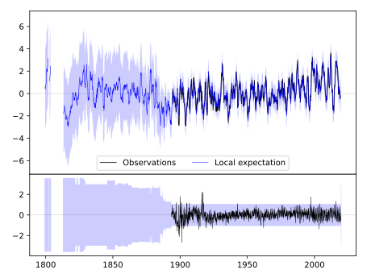
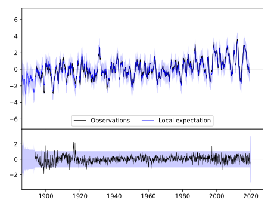
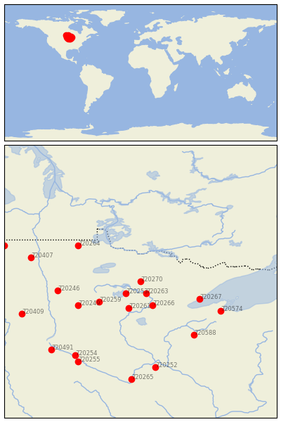

MARCELL 5NE [USA]


| Neighbour | Name | Country | Distance | Lon/Lat | Years |
|---|
| 720270 | MARCELL 5NE | USA | 0 | -93.7, 47.6 | 1893-2019 |
| 720263 | GRAND RPDS FOREST LA | USA | 46 | -93.5, 47.2 | 1893-2019 |
| 720253 | LEECH LAKE | USA | 58 | -94.2, 47.2 | 1887-2019 |
| 720266 | SANDY LAKE DAM LIBBY | USA | 93 | -93.3, 46.8 | 1892-2019 |
| 720261 | PINE RIVER DAM | USA | 104 | -94.1, 46.7 | 1887-2019 |
| 720259 | PARK RAPIDS 2 S | USA | 131 | -95.1, 46.9 | 1885-2019 |
| 720267 | TWO HARBORS | USA | 164 | -91.7, 47.0 | 1893-2019 |
| 720249 | DETROIT LAKES 1 NNE | USA | 181 | -95.8, 46.8 | 1890-2019 |
| 720264 | ROSEAU | USA | 204 | -95.8, 48.8 | 1877-2019 |
| 720246 | ADA | USA | 213 | -96.5, 47.3 | 1893-2019 |
| 720574 | ASHLAND EXP FARM | USA | 232 | -91.0, 46.6 | 1894-2019 |
| 720588 | SPOONER AG RES STN | USA | 242 | -91.9, 45.8 | 1893-2019 |
| 720407 | GRAFTON | USA | 289 | -97.4, 48.4 | 1891-2019 |
| 720252 | FARMINGTON 3 NW | USA | 324 | -93.2, 44.7 | 1888-2019 |
| 720254 | MILAN 1 NW | USA | 325 | -95.9, 45.1 | 1893-2019 |
| 720409 | LISBON | USA | 326 | -97.7, 46.5 | 1891-2019 |
| 720255 | MONTEVIDEO 1 SW | USA | 340 | -95.8, 44.9 | 1889-2019 |
| 720491 | MILBANK 4 NW | USA | 343 | -96.7, 45.3 | 1886-2019 |
| 720408 | LANGDON EXP FARM | USA | 366 | -98.3, 48.8 | 1886-2019 |
| 720265 | ST PETER | USA | 367 | -94.0, 44.3 | 1877-2019 |